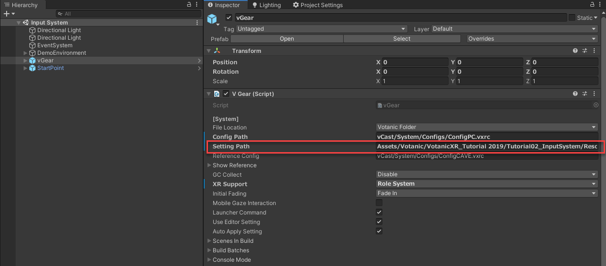
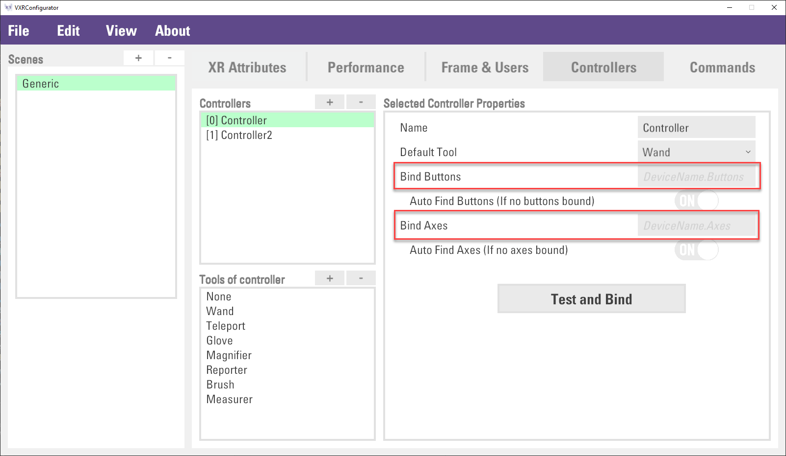
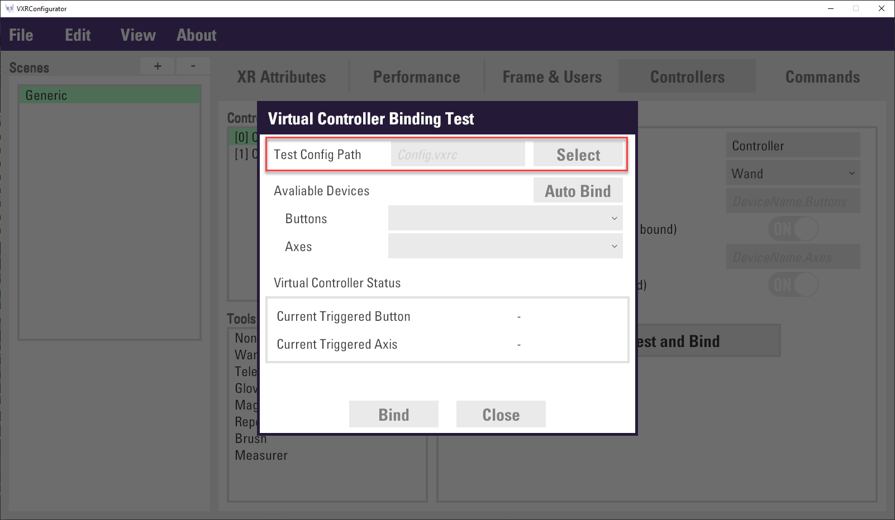
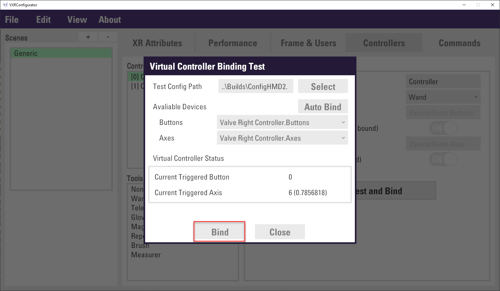

Getting Cross-platform Input
The Input System of VotanicXR is designed with cross-platform in mind, it is intended to be a flexible and reconfigurable system that can be configured to work with different input devices without needing to re-work the application logic.
Input System Terminology
VotanicXR’s input system is designed to revolve around the VotanicXR application user’s intention or action, which we abstract as Command in the application and uses it in various contexts in VotanicXR. The use of Command effectively decouples the application logic in the VotanicXR application and the events happening on a physical input device. With this decoupling of application and physical device logic, not only can the application developer focus more on creating the actual VR experience, the application itself is also more flexible which allows users with different kinds of physical input devices to customize the input bindings at any time, without needing to re-work the application logic.
While the Command is VotanicXR’s logical input abstraction layer which maps the user intention to application logic, the Virtual Controller is VotanicXR’s physical input abstraction layer that unifies input events from various physical devices. The Virtual Controller is designed to be user-friendly yet also reconfigurable to adapt to different application needs. For typical usage, VotanicXR scans for available input devices in the system and automatically maps them to the virtual controllers, enabling these devices for use by the input system. Optionally, the virtual controllers can be customized to map different special input devices, such as custom-made IoT devices and motion platform, to virtual controller’s input events.
To accommodate device-independent cross-platform input, a mapping is created to bind various Virtual Controller events to different Command. The illustration below depicts the structure of the VotanicXR Input System and how it works with different physical input devices and application logics.
The input system is organically integrated into features of VotanicXR. This chapter would provide a generic overview and common usage of the input system, whereas the feature-specific implementation will be introduced in the subsequent chapters of this tutorial series in the respective tutorial chapters.
Input System Tutorial Scene
The related materials and example scene are in Assets > Votanic > VotanicXR_Tutorial > Tutorial02_InputSystem.
Commands
The commands abstract user’s intention or action in the application. To use a command in VotanicXR’s application logic, the relevant command would need to be first declared in the application’s commands list, then invoked in the application logic using VotanicXR’s command handling methods.
Commands, once created, are stored in the VotanicXR application’s setting.vxrs file and can be customized using the VotanicXR Configurator. By default, there are a set of built-in commands that can be used to invoke various built-in features of VotanicXR. In addition, custom commands can be created to invoke self-defined application logics.
The Command system is a flexible yet powerful system that can be configured to use in simple and complex scenarios. A command consists of a list of triggers each configured to map to a virtual controller event. Optionally, a list of pre-conditions can be defined which limits the contexts for which the command can be triggered. A list of optional trigger conditions can also be added to each individual trigger to restrict how the particular trigger can be used. An illustrative example will be provided in this tutorial to demonstrate how the command system is used in practice.
Built-in commands
Below is a list of VotanicXR’s built-in commands and the corresponding actions they invoke. The usage and default binding of these commands are introduced in the respective tutorial chapters that uses these commands.
| Built-in Command | Category | Description | Remark |
| Quit | System | Quit the application | |
| Reset | Reset the scene | ||
| Test3D | Show test 3D tool | ||
| Stereo | Toggle 2D and 3D mode | ||
| Tracking | Toggle VR positional tracking on/off | ||
| Photography | Shortcut for enable 2D mode and disable tracking | ||
| Scan | Rescan input devices and map to unassigned virtual controller | ||
| UserLevel | Change user level | ||
| UserLevelLock | Lock user level | ||
| Shadows | Toggle shadow setting on/off | ||
| Stabilize | Toggle stabilize camera function on/off | ||
| Info | InfoWall | Toggle InfoWall on/off | |
| Debug | Toggle debug message on/off on InfoWall | ||
| FPS | Toggle FPS display on/off on InfoWall | ||
| Menu | In-game Tool | Open in-game menu | See Using In-Game tools section for details |
| SetTool | Toggle in-game tool | ||
| Zoom | Trigger zoom function | ||
| Reporter | Trigger reporter function | ||
| Brush | Trigger brush function | ||
| Measurer | Trigger measurer function | ||
| Soul | Locomotion | Toggle soul mode on/off | See Locomotion section for details |
| Traveler | Toggle traveler mode on/off | ||
| Move | Trigger the user transform move forward or backward | ||
| Rotate | Trigger the user transform rotate left or right | ||
| Shift | Trigger the user transform move left or right horizontally | ||
| Float | Trigger the user transform elevate upward and downward | ||
| Turn | Trigger the user transform turn left or right by 90 degrees | ||
| JumpSink | Trigger user transform jump or sink to the ground | ||
| Teleport | Trigger teleport action | ||
| Grab | Interaction | Trigger grab function | See Interaction with Virtual World section for details |
| Ungrab | Trigger ungrab function | ||
| Pick | Trigger pick function | ||
| Drop | Trigger drop function | ||
| Trigger | Trigger confirm function |
Create Custom command
Apart from the built-in commands, custom commands can be created and used in the VotanicXR applications. Below, we provide an example to create a custom command using the VotanicXR Configurator. Before you proceed, open the tutorial example scene in Assets > Votanic > VotanicXR_Tutorial > Tutorial02_InputSystem.
Select the GameObject
vGearand identify the Setting Path for the application’ssetting.vxrsfile, then navigate to the path and open it with the VotanicXR Configurator.
Select
Commandstab, click+button in theCustom Commandslist.Then, put down
Shootas Command Name and clickCreatebutton.The custom command
Shootis created in theCustom Commandlist and ready for the further action to bind the trigger event to virtual controller. This will be future discussed in the below section.
Virtual Controller
The Virtual Controller is VotanicXR’s physical input abstraction layer that unifies input events from various physical devices. It provides interfaces for developers or other VotanicXR modules to access the events of the physical input devices through the virtual controller.
VotanicXR has native support to a list of physical input devices, whose buttons and axes are mapped to the virtual controller button and axis automatically once the physical input devices are identified. The default mappings of the virtual controller and various input devices are provided here.
For typical usage, VotanicXR scans for available input devices in the system and automatically maps them to the virtual controllers, enabling these devices for use by the input system. For example, when a pair of HTC Vive controllers are connected to the system, the 2 vive controllers are automatically mapped to controller[0] and controller[1], with controller[0] as the right hand controller and controller[1] as the left hand controller of the user.
Virtual Controller Configuration
For advanced usage, the virtual controller can be customized in several ways:
Change the tools available on each controller
Change the input device mapping on the controller
The Virtual Controller configuration is stored in the setting.vxrs and can be configurated using the VotanicXR Configurator. Open the same setting.vxrs file that you used to create the custom command in the last section, then select the Controllers tab in the VotanicXR Configurator.
Virtual Controller are listed in the Controllers list. By default, there are two virtual controllers, Controller and Controller2, available for use by the VotanicXR application. For typical use, when there are two controllers connected to the system, the first identified controller will be mapped to Controller (controller[0]), and the second identified controller will be mapped to Controller2 (controller[1]). For advanced usage, you can configure the specifics of each controller by selecting the particular controller in the list and configure different properties of the controller.
Configure Controller Tools
There are several built-in tools that can be attached to each virtual controller. Depending on the needs of your application, you can customize the available tools on each controller and set the corresponding default tools. Details of the VotanicXR tools are introduced in the In-Game Tools chapter, below we introduce how to customize tools on each controller.
Select the controller which you wish to customize the controller tools.

The tools available on the controller are shown in the
Tools of controllerlist. Add or subtract tools from the list.In the
Selected Controller Properties, select the default controller tool from theDefault Toolproperty.
Configure Controller Input Device Mapping
In most cases, VotanicXR automatically identifies and maps available input devices to the virtual controllers for use by the applications. However, in some advanced uses, such as using custom-made IoT devices, VRPN devices, or when the system has multiple devices connected to it, it is necessary to define custom device mapping so that the correct input device would be mapped to the controller.
Select the controller which you wish to customize input device mapping
In the
Selected Controller Properties, the optionsAuto Find ButtonsandAuto Find Axesare enabled by default. This enables VotanicXR to automatically scan for physical input devices and map them to the virtual controllers in the sequence in which the devices are identified. If theBind Buttonsand/orBind Axesare defined for the application, VotanicXR will first search for the device matching the names of the Button and Axis defined, the auto bind mechanism will activate when the manually defined devices are not identified. If you do not want your application to use the automatically identified devices, you can turn off theAuto Find ButtonsandAuto Find Axesoptions.
(Optional) Manually Bind the Device to Virtual Controller
User can bind a specific device to the virtual controller. Input the device button and axis name to
Bind ButtonsandBind Axesfield correspondingly.
The device button and axis name can be retrieved by an embedded tool. Click
Test and Bindbutton to open aVirtual Controller Binding Testpanel.Click the
Selectbutton to choose a target VR system configuration file (config.vrxc) configured with the physical input device that you wish to use. For this tutorial, you can use theConfigPC.vrxcfile in vGear's Config folderAssets > Votanic > VotanicXR > vCast > System > Configs.
Before loading the configuration file, turn on the device(s) that you wish to use, as the configurator will try to load the devices listed in the file as well as scanning all available devices currently connected to the system.
After the config file is selected, the available devices are listed in the
ButtonsandAxesdropdown list. Developer can change other device to test, and the result will be displayed in theVirtual Controller Statussection.After the device is confirmed, click
Bindbutton to close the panel, and the device’s button and axes will fill toBind ButtonsandBind Axesfields.
Finally, click
File > Saveto save the configuration.
Binding Command to Virtual Controller Event
After the command and virtual controller ready, we can bind the command to the virtual controller event. As mentioned previously, the command system included pre-condition and trigger condition to set up the dependency of the command or limit the command usage. There are some remarks for about the setting the command and virtual controller event. please check this article for details.
This section introduces 1) how to bind the command to virtual controller event, 2) how to setup command pre-condition and trigger condition, the conditions are listed as below.
- Command: bind
Shootcommand to Vive controller and keyboard - Pre-condition: allow the command to be used in Traveler mode.
- Tigger condition: two triggers will be created
- 1 trigger to bind the Vive controller
TouchPadbutton for all environments - 1 trigger to bind the keyboard spacebar in PC environment only for testing
- 1 trigger to bind the Vive controller
In
Projectwindows, double click and open thesetting.vxrswith VotanicXR Configurator.Go to
Commandstab, selectShootcommand inCustom CommandsSetup the command pre-condition. In the right-hand side windows. Click the
+Button inPre Conditions (For all triggers)property. Then, select the new created itemNone. In theTypeselect theTravelerin the drop-down list.Setup the trigger condition to Vive controller in all environment. Scroll down a little bit to
Triggers (Command will be sent if ONE is triggered)section. Select theTrigger 1, then, input0inInput Controllerproperty. This is the virtual controller index, index 0 means the first virtual controller will be bound to thisShootcommand.Then, in the
Selected Input Propertiessection, selectButtonDownin theTypeproperty and input3in theKeyproperty. Key is the virtual controller button index, please check This Link for details.(Optional) Jump to step 7 if you want to skip this step. This step is to setup another trigger condition to keyboard in PC environment for testing or debug purpose.
Click
+button inTriggers (Command will be sent if ONE is triggered)section. Then, select the new createdTrigger 2. Click+button inConditionsto add a trigger condition. In theTypeproperty, selectEnvironmentin the drop-down list. Finally, inputPCin theEnvironment TypeInput
-1inInput Controllerproperty. The-1value is to disable the use of virtual controller, and therefore, it will detect the keyboard device. Then, selectKeyboardDownin theTypeproperty and inputSpaceinKeyproperty.Finally, click
File > Saveto save the configuration, and the binding process is completed. The next section will discuss how the command be used in the application.
Command Handling
VotanicXR provides a set of command handling methods from the vGear.Cmd class. The most typical use of the commands is through the Cmd.Receive and Cmd.Send methods, which will be introduced below. You can refer to the API documentation here for a complete list of the command handling methods.
Receiving Command
When an input event is invoked on the physical input device, the command that is mapped to the input event of the corresponding virtual controller is triggered, this results in the VotanicXR application receiving the command from the input system. In VotanicXR command handling, the Receive and AllReceived methods can be used for receiving commands. Besides, the Value method can be used for retrieving the value of the command’s parameter. The below section will illustrate command handling steps to receive the Shoot custom command.
Create a
CommandControllerGameObject in the scene. Create aCommandHandlerscript and attach to theCommandController.In the
CommandHandlerscript, input the code below. The firstif statementis to send out a bullet to shoot the stuff in front of user when theShootcommand is received. The secondif statementis to print out the input controller axis value when theMovebutton is pressed.void Update() { if (vGear.Cmd.Received("Shoot")) { GameObject bullet = GameObject.CreatePrimitive(PrimitiveType.Capsule); bullet.transform.localScale = new Vector3(.05f, .05f, .05f); bullet.transform.LookAt(vGear.controller.transform); bullet.AddComponent<Rigidbody>().AddForce(vGear.head.transform.forward * 1000f); Destroy(bullet, 5f); } if (vGear.Cmd.Received("Move")) { Debug.Log("Move value: " + vGear.Cmd.Value("Move")); } }Play the scene and check the message in the debug windows.
Sending Command
Apart from binding commands to virtual controller buttons and axes, commands can be sent out programmatically. Commands send out from API do not need to define in the configurator first.
Modify the first
if statementinCommandHandlerscript. If theShootcommand is invoked few times, aShootOverloadedcommand will be sent out.void Update() { if (vGear.Cmd.Received("Shoot") || vGear.Input.KeyboardDown(KeyCode.H)) { GameObject bullet = GameObject.CreatePrimitive(PrimitiveType.Capsule); bullet.transform.localScale = new Vector3(.05f, .05f, .05f); bullet.transform.LookAt(vGear.controller.transform); bullet.AddComponent<Rigidbody>().AddForce(vGear.head.transform.forward * 1000f); Destroy(bullet, 5f); if (++shootCount > 5) { vGear.Cmd.Send("ShootOverloaded"); } } if (vGear.Cmd.Received("Move")) { Debug.Log("Move value: " + vGear.Cmd.Value("Move")); } }Create a
GameControllerGameObject and attach aGameHandlerscript on it.In the
GameHandlerscript, input the code below to display a message when commandShootOverloadedis received.void Update() { if (vGear.Cmd.Received("ShootOverloaded")) { Debug.Log("You press shoot button too much!")); } }Finally, check the result in the play mode.
Getting Virtual Controller Value
Virtual Controller buttons and axes can be access via Class vGear.Ctrl. The related methods are listed in below table. The detail API document can be checked here.
However, direct access the virtual controller buttons and axes is not recommended in the application. The Command system is the better way to use the input system.
Ctrl Class Function |
|---|
| AxisDown(Int32, AxisDirection, Int32, Boolean) |
| AxisHold(Int32, AxisDirection, Int32, Boolean) |
| AxisPress(Int32, AxisDirection, Int32, Boolean) |
| AxisUp(Int32, AxisDirection, Int32, Boolean) |
| AxisValue(Int32, Int32, Boolean) |
| ButtonDown(Int32, Int32, Boolean) |
| ButtonHold(Int32, Int32, Boolean) |
| ButtonPress(Int32, Int32, Boolean) |
| ButtonTouch(Int32, Int32, Boolean) |
| ButtonUp(Int32, Int32, Boolean) |
| GetAxes(Int32) |
| GetButtons(Int32) |
| SetAxes(Int32, Int32) |
| SetAxes(String, Int32) |
| SetButtons(Int32, Int32) |
| SetButtons(String, Int32) |
| Vibrate(Single, Int32) |
| Vibrate(Single, Single, Single, Int32) |
| VibrateAxes(Single, Int32) |
| VibrateAxes(Single, Single, Single, Int32) |
| VibrateButtons(Single, Int32) |
| VibrateButtons(Single, Single, Single, Int32) |
The following step is an example to use the Virbtate API
Open a tutorial scene. In
Projectwindow, openAssets > Votanic > VotanicXR_Tutorial > Tutorial02_InputSystemCreate GameObject
VirtualController. Then create aVirtualControllerScriptC# script and attached the script toVirtualControllerAdd the below code in the
VirtualControllerScript. In theVibratemethod, the argumentdurationis the duration of vibration. For further details please refer API.float time = 0f; void Update() { time += Time.deltaTime; if (time >= 5f) { vGear.Ctrl.Vibrate(1f); time = 0f; } }In the play mode, the controller will be vibrated one second for every five seconds.